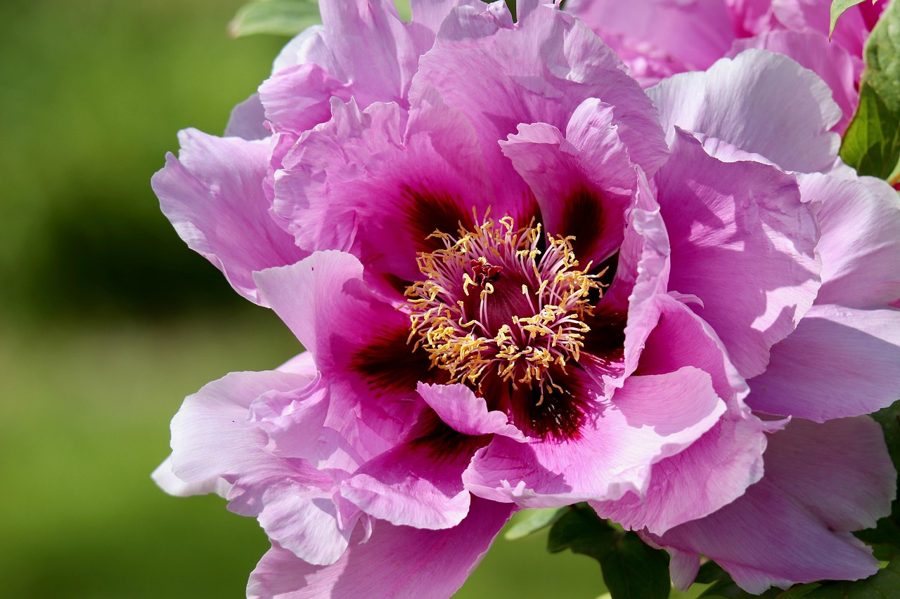
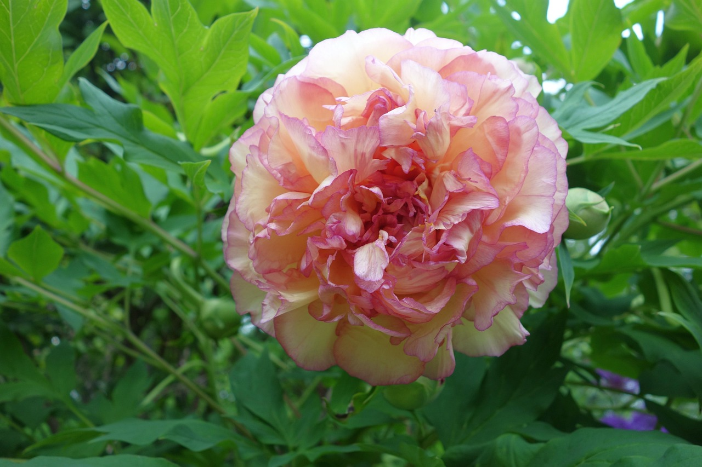

🌺 牡丹 国花
Paeonia suffruticosa - 富贵与荣华的象征



📋 基本信息
学名：
Paeonia suffruticosa
科属：
芍药科芍药属
原产地：
中国
花期：
4-5月（春季开花）
花语：
富贵、荣华、圆满、吉祥
株高：
1-2米
🎨 主要品种
姚黄
花王
黄色系代表魏紫
花后
紫色系代表玉楼春
雪白如玉
白色系代表赵粉
娇艳粉嫩
粉色系代表🌱 养护要点
☀️ 光照：
喜阳光充足，每天6-8小时
💧 浇水：
春季勤浇水，夏季防涝
🌿 土壤：
深厚肥沃的中性土壤
🌡️ 温度：
适宜15-25°C，耐寒性强
🍃 施肥：
春秋施基肥，花前追肥
✂️ 修剪：
花后修剪，秋季整枝
💡 专业养护技巧
• 种植时需深挖穴，施足基肥
• 夏季高温时需适当遮阴
• 花后及时剪除残花，节约养分
• 秋季落叶后进行整形修剪
🌺 牡丹特色养护
• 牡丹为深根性植物，忌频繁移栽
• "春发枝、夏打盹、秋生根、冬休眠"
• 花期需充足水分，但忌积水
• 三年以上植株才能开花良好
🍂 季节养护指南
🌸 春季（3-5月）
• 发芽期浇水
• 花前施肥
• 花期管理
• 花后修剪
☀️ 夏季（6-8月）
• 遮阴防晒
• 防涝排水
• 防治病害
• 叶面喷肥
🍁 秋季（9-11月）
• 施越冬肥
• 整形修剪
• 适当控水
• 准备休眠
❄️ 冬季（12-2月）
• 休眠期养护
• 防寒保温
• 清理落叶
• 检查虫害
🐛 常见病虫害防治
褐斑病：
叶片有褐色斑点，喷洒多菌灵
根腐病：
根部腐烂，改善排水，消毒土壤
蚜虫：
危害嫩芽，喷洒吡虫啉
红蜘蛛：
叶片有黄斑，增加湿度，喷洒杀螨剂
🌿 繁殖方法
分株繁殖：
秋季分株，每丛带3-5个芽
嫁接繁殖：
用芍药根作砧木，秋季嫁接
播种繁殖：
用于育种，需5-7年开花
扦插繁殖：
选取半木质化枝条扦插
📚 文化意义
牡丹是中国的国花，被誉为"花中之王"，象征富贵、荣华和国家的繁荣昌盛：
富贵象征：
牡丹花开富贵，象征繁荣昌盛
国花地位：
1903年被定为清朝国花
文化寓意：
象征国家繁荣和人民幸福
艺术表现：
国画、刺绣、陶瓷常用题材
👑 牡丹与历史文化
• 唐代开始盛行，有"唯有牡丹真国色"之誉
• 洛阳、菏泽为牡丹之乡，历史悠久
• 与芍药并称"花中二绝"
• 牡丹文化节已成为重要文化活动
🏛️ 著名牡丹园
洛阳牡丹园：
世界最大牡丹基因库，品种最全
菏泽曹州牡丹园：
中国最大牡丹观赏基地
北京景山公园：
皇家园林牡丹，历史悠久
杭州花港观鱼：
江南牡丹的代表
🌿 药用价值
牡丹皮：
清热凉血，活血化瘀
牡丹花：
调经活血，养颜美容
牡丹根：
消炎止痛，降血压
牡丹叶：
外用可治疗皮肤炎症